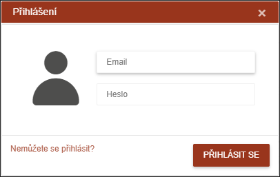
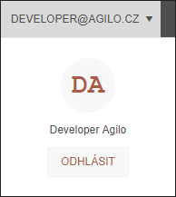
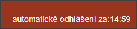

Přihlášení do systému
Uživatel se do systému přihlašuje svým emailem a nastaveným vlastním heslem.

Po přihlášení je v Technickém menu vypsán email , kterým je uživatel přihlášen. Zde se může uživatel odhlásit ze systému kliknutím na zobrazený email.

Systém provede automatické odhlášení v případě, že program bude v aplikaci více jak 15 minut bez aktivity. Tuto informaci vypisuje v pravé horní části programu.
